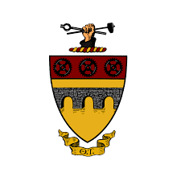
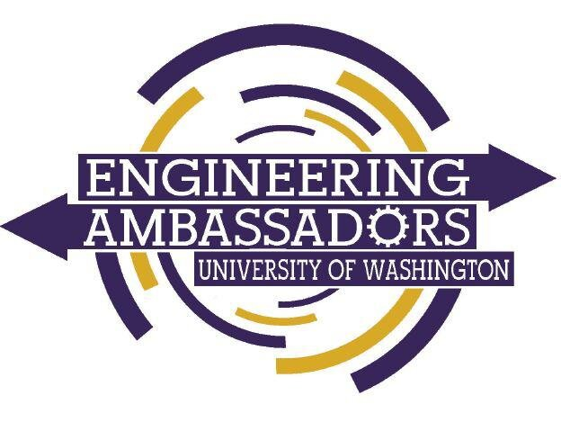
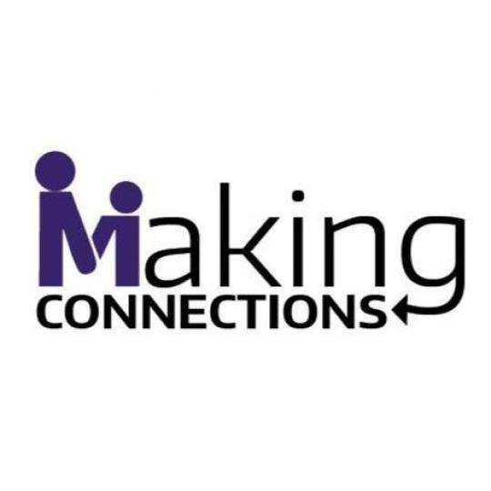
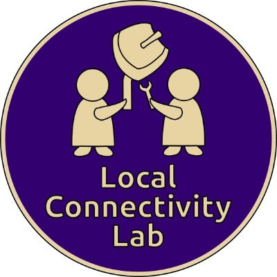

Walmart X Gracehopper: Project Innovation
About the Developer

Name: Melinda Tran
School: Univeristy of Washington, Seattle
Major: Electrical & Computer Engineering
Minors: Education, and Computer Science
Associations: Girls Who Code, Theta Tau, Society of Women Engineers,
Engineering Ambassadors
LinkedIn: linkedin.com/in/melinda-t/
Hello everyone! My name is Melinda Tran, and I am a rising Senior at the University
of Washington in Seattle. I am a first-generation-to-college student studying Electrical & Computer Engineering with a
concentration in Embedded Systems. I also have 2 minors: Education, and CSSE (Computer Science
& Software Engineering). I am interested in making impact in the fields of the environment,
aerospace, and/or society. I also have a passion for teaching! I'm interested in a career in many
things like Embedded Systems, Software Engineering, and teaching.
 Girls Who Code:
Girls Who Code:
I am currently the President of Girls Who Code College Loops
at the University of Washington. I started off as a Secretary,
then Vice President, and now President 2 years running! Here
I work to create an welcoming and inclusive environment to learn
about technology and develop professional skills. This past summer,
I also worked as a Teaching Assistant in the Summer Immersion Program
for Girls Who Code, where I help to facilitate a positive classroom
environemnt for students to learn code.

Theta Tau:
Theta Tau is a professional Engineering Fraternity. I have been a
part of this since my freshman year. We aim to develop our
community bond with one another, give back through philanthropy,
and furthere develop our professional engineering skills.

Engineering Ambassadors:
Engineering Ambassadors is an organization that aims to
increase k-14 outreach for Engineering, particularly in communites
with hisotrically underrepresented populations. I have been a part
of this program since my freshman year. I work by running engineering
outreach events, participating panels, and answering questions to
families intrested in the University of Washington's College of
Engineering.

Making Connections:
Making Connections is a program that aims to provide resources in
education for students who need it in the Seattle Area. Based in
UW's Women's Center, they offer programs in tutoring, college Prep,
and more! I volunteer here as a Mentor for students who are primiarly
from historically underrepresented backgrounds and first-generation
students to attend school.

Seattle Community Network (Local Connectivity Lab):
This project teams aims to provide free wifi to large comminity spaces in Seattle
and Tacoma spaces. I volunteer here as the main website developer for their
main website. I work on a small overall team of website developers,
working closely with a design team of two to fulfill their requests.